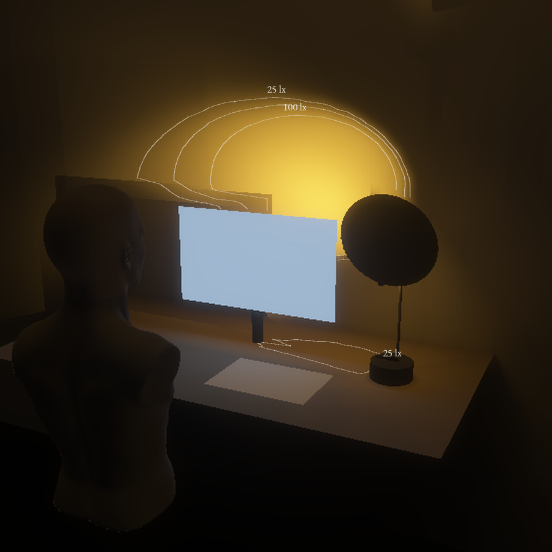

Gesten
Vipp skiva.
2,99 Wfor 350 lx på feltet · tak 7,5
0,62jamnheit · referanse 0,6
1 013 cd/m²høgst mot auget, 25 til 60 cm · F1 3000
5,1 tarbeidslys per 21700-celle
Langs overgangen, lx
Prinsipp
Ei lykt i foten lyser på ei bøygd spegelskive som vippar lyset frå veggen ned på feltet. Ein fast flik ved stolpen held veggen bak skjermen lys.
Fot, stong og skive som Northern. Fliken er eit fjerde element (mi tolking). Næraste nabo: Verner Panton Reflect, som har fast, kvit skive og ingen flik.
Skissemodell til 18.11
Folie på papp, Ø 250 mm, på ein printa ribbe med boge R 1,2 m. To lykter i foten: éi på skiva, éi på fliken (12 × 8,4 cm, folie og bakepapir), 30 cm over bordet og 3,5 cm til venstre for stolpen.
Føreseiing: Med bøyen er lågaste rute over 0,5 av snittet, flat under 0,45.
Held ikkje enno
- Spegelskiva legg 0,33 av feltluxen på skjermen i arbeid og 220 lx midt i overgangen.
- F1 krev ei skive med lobe under 4,5°. Folie på papp er ikkje målt.
- Frå 25 cm ser auget 424 cd/m² i stemning. F5 tillèt 500.